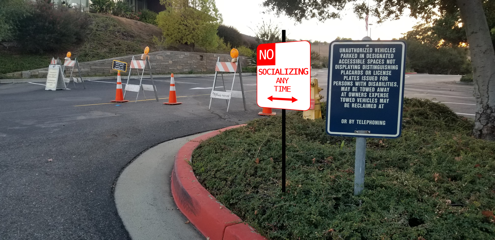
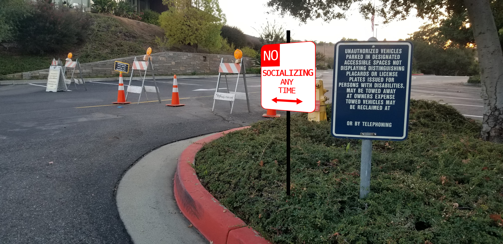

This is the church that I always attend and assist the staff at. For all the masses I've attended and sang for, the environment is extremely different since the outbreak of covid. Masses are held primarily outdoors and all seats are distanced 6 feet apart (just like normal protocol). And another guideline they demanded was that members of the church do not socialize once mass is over and to immediately make their ways to their car. Therefore, I wanted to highlight this guideline by modifiying a more well-known "No Stopping at Any Time" with a "No Socializing at Any Time" Sign right at the entrance and parking lot of the church.
 

This is a park I love visiting whenever I'm in this area, since it is relatively very close to my church. It was initially closed during the beginnings of the covid outbreak, and has been reopened for quite some time recently. While taking pictures of this area, I saw families and children using the playground while wearing masks, and I thought I'd highlight the importance of playing safely in this park with a sing, "Stay Safe Play Safe" by the entrance of the park for them to see amongst entering.
Very close to the park (where sign 2 is placed), there is a trail that people can walk which leads to a school, follows around the school, and can lead to a nearby plaza. By the park, there is a bridge where one can begin (or exit) the trail. On my walks on this trail, I've noticed that not all individuals wear masks during their walks but just simply distance themselves. So I thought I'd put a sign, "Smile at a Distance," to maybe help remind individuals before their walk to smile at a distance to those they may pass. Especially in sad times like these where not many people see other forms of life as frequently anymore, I think being able to highlight the simple act of smiling to others is a small act of kindness that one could put out into these dire times.
At the plaza that the trail leads to, there is a preschool held there that allows a few safe onsite services during covid. Toddlers are allowed to use the small playground provided and I thought I'd make a sign (ideally I would like the sign placed inside the area, not outside the fence) that's a modification of a speed limit sign saying "Distance Limit 6" to remind toddlers, parents, or staff to have a distance limit of 6 feet.